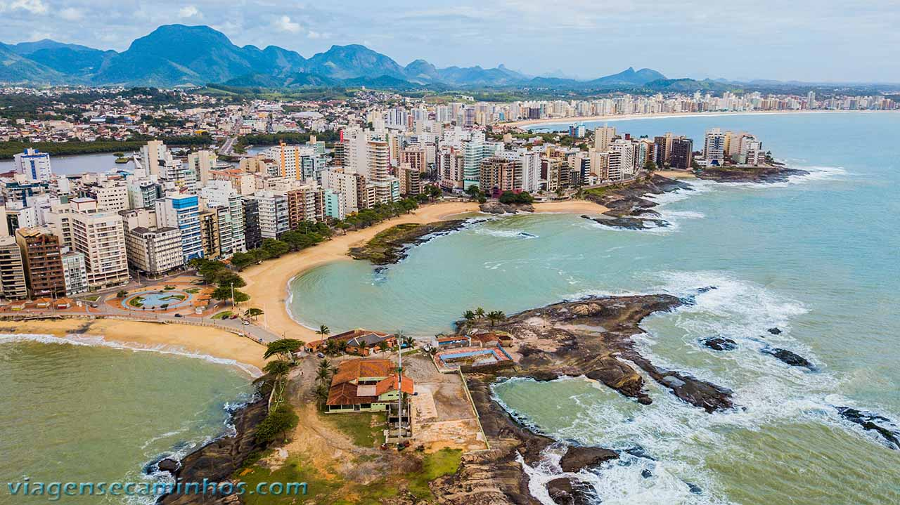

| Guarapari | Descrição | |
|---|---|---|
|  |
A história de Guarapari começa em 1585 com a fundação da aldeia jesuíta de Santa Maria de Guaraparim, nome que significa ave de plumagem vermelha (guará) e armadilha de caça (pari) em tupi. A aldeia foi elevada a vila em 1679 e, após a fundação da sua primeira matriz, tornou-se município em 1878, e cidade em 1891. A cidade ganhou notoriedade a partir dos anos 1960 com a fama das suas areias monazíticas, e também pela colonização de europeus, principalmente italianos, no seu interior.
Em Guarapari, para além das praias, pode explorar a beleza natural nas trilhas do Parque do Morro da Pescaria e do Parque Paulo César Vinha, desfrutar da gastronomia da Rota da Ferradura, visitar a Antiga Matriz de Nossa Senhora da Conceição, ou divertir-se num parque aquático como a Acquamania. Pode também fazer um passeio de escuna, avistar baleias ou simplesmente caminhar pela orla.
|